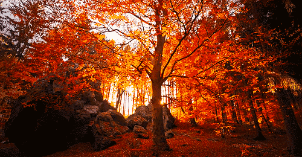

SITUATION, CARACTERISTIQUE ET HISTOIRE
Cet escalier vertigineux a été conçu pendant la seconde guerre mondiale par l’armée américaine. Il permettait de lier deux vallées qui étaient séparées par la montagne. Sur cet escalier, les soldats ont notamment pu installer les câbles d’antennes servant à la communication. Aujourd’hui, suite à des événements climatiques, de nombreuses marches de l’escalier ont été endommagées. Pour éviter d’avoir à détruire ce sentier, une association s’est créée et propose un plan de sauvegarde et d’entretien. Afin d’obtenir les financements nécessaires à la restauration de cet édifice, les bénévoles proposent de mettre en place un droit d’entrée à hauteur de 100$ pour les touristes et 10$ pour les locaux.

Que de telles constructions aient pu être réalisées il y a plus de 50 ans, permet de voir les nombreuses possibilités qui sont offertes pour la création d’escalier. C’est pour cela que la société French Art Concept propose la conception d'escaliers sur-mesure adaptés à vos envies et vos impératifs techniques. Chaque habitation est différente, et l’escalier doit être en totale harmonie avec votre intérieur afin de devenir un atout esthétique et non plus un indispensable que l’on tente de dissimuler. Qu’il s’agisse d’un escalier droit comme l, ou d’un escalier hélicoïdal qui permet de gagner de la place, tout est une question de goût et de contraintes techniques. C’est cela que vous propose French Art Concept.

Amateurs de sensations fortes, découvrez les escaliers de Haiku à Hawai ! L'archipel d'Hawaï est incontestablement un endroit paradisiaque. La Seconde Guerre mondiale y a laissé certains vestiges, dont un réseau de communication avec des antennes radio installées à 850 mètres d'altitude, en haut d'une montagne, et destinées à relier deux vallées.
Rendez-vous dans l'archipel d'Hawaï sur l'île d'Oahu, située dans l'Océan Pacifique. Il existe dans ce petit coin paradisiaque, l'Escalier du Paradis ("Stairway to heaven" en anglais) et ses 3922 marches. Si vous osez l'arpenter il vous mènera au sommet d'une montage et vous permettra de contempler un des plus beaux panorama du monde à une seule condition: l'effort physique.
Paradisiaque mais dangereux,L’escalier du paradis ou "Haiku Stairs" est situé sur l'Île d'Hawaï. Composé de près de 4 000 marches (3 922 pour être précis), il permet d’accéder au somment d’une montagne située à 850 mètres d’altitude. Son surnom d’escalier du paradis s’explique car par le fabuleux panorama qu’il offre et qui est l’une des plus belles vues au monde.Ce vestige de la seconde guerre mondiale a été fermé au public il y a 30 ans pour des raisons de sécurité, ce qui n’empêche pas de nombreux vacanciers en quête de sensations fortes de s’y aventurer chaque année. On compte ainsi une centaine de personnes chaque année qui passent outre cette interdiction, malgré le risque de se voir infligé une amende de 600$ voire une de prison de 10 mois.
La possibilité de contempler l'exceptionnel paysage d'Hawaï, d'avoir l'impression de vivre une réelle aventure et de faire des photos de cette expérience les motive à fond ! Les plus déterminés partent avant l'aube, car il vaut mieux éviter de rencontrer l'agent de sécurité chargé de la surveillance du sentier… Eh oui, la route qui mène au paradis est semée d’embûches !

Sur l'île de d'Oahu, dans l'archipel d'Hawaï, un sentier sinueux appelé Stairway to Heaven (Escaliers du Paradis), comportant 3 922 marches, mène au sommet d'une montagne. Bienvenue à Hawaï pour en prendre plein les yeux ! Un site qui fait rêver
LES ACTIVITES
- Location de jet ski à Maunalua Bay
- Location de kayak à Kaneohe Bay (kayak pour deux personnes)
- Croisière privée en bateau au coucher du soleil à Waikiki Honolu
- IMILOA - Excursion de plongée avec tuba express Na Pali (AM)
- CROISIÈRES DU CAPITAINE CUISINE 8h45: VISITE DELUXE SNORKEL & DOLPHIN - Kealakekua Bay
Visites libres et locations
30 minutes
Applique des mesures de sécurité
Annulation gratuite
à partir de 57,80€ par adulte

Visites libres et locations
4 heures
Applique des mesures de sécurité
Annulation gratuite
à partir de
63,69€
par groupe
Bateaux à moteur
Applique des mesures de sécurité
Annulation gratuite
à partir de
146,50€
par adulte

4-5 heures
Annulation gratuite
à partir de
169,86€
par adulte
Privé et de luxe
3 heures
Applique des mesures de sécurité
à partir de
84,88€
LES HOTELS ET RESTAURANTS
- Hotel LaCroix
- Embassy Suites By Hilton - Waikiki Beach Walk
- Waikiki Beachcomber by Outrigger
- Aqua Oasis
- 'Alohilani Resort Waikiki Beach
Vous cherchez un hôtel familial à Honolulu ? Bienvenue à l'Hotel La Croix, un établissement de choix pour les voyageurs comme vous.
Grâce à son emplacement tout près des monuments populaires, comme Waikiki Beach Walk (0,4 km) et Statue of Duke Kahanamoku (0,6 km), les clients du Waikiki Gateway Hotel pourront facilement profiter des attractions les plus célèbres de Honolulu.
Le wi-fi gratuit est offert aux clients et les chambres du Waikiki Gateway Hotel sont dotées d'une télévision à écran plat, d'une climatisation et d'un réfrigérateur.
Pendant votre séjour, vous pourrez profiter des services de l'hôtel, dont la réception ouverte 24 heures sur 24, le journal et la supérette. Les clients du Waikiki Gateway sont également invités à utiliser une piscine extérieure et un petit déjeuner de l'hôtel. Un parking est à la disposition des voyageurs véhiculés.
Ponctuez votre séjour à Honolulu d'une dégustation de ribs local dans l'un des restaurantes alentours, comme Duke's Waikiki, The Cheesecake Factory ou House Without a Key.
Si vous avez le temps, Shangri La (4,8 km), Honolulu Museum of Art (2,9 km) et Hawaii State Art Museum (4,0 km) est une attraction populaire situé à deux pas.
L'Hotel La Croix est impatient de vous accueillir à l'occasion de votre voyage à Honolulu.
Vous cherchez un hôtel familial à Honolulu ? Bienvenue à l'Embassy Suites By Hilton - Waikiki Beach Walk, un établissement de choix pour les voyageurs comme vous.
Le wi-fi gratuit est offert aux clients et les chambres de l'Hotel Embassy Suites Waikiki Beach Walk sont dotées d'une télévision à écran plat, d'une kitchenette et d'un réfrigérateur.
Pendant votre séjour, vous pourrez profiter des services de l'hôtel, dont la réception ouverte 24 heures sur 24, le service de chambre et la conciergerie. Les clients de l'Embassy Suites Waikiki sont également invités à utiliser une piscine sur le toit et un petit déjeuner inclus de l'hôtel. Un parking est à la disposition des voyageurs véhiculés.
Situés à quelques pas des monuments les plus populaires de Honolulu, comme Waikiki Beach Walk (0,3 km) et Statue of Duke Kahanamoku (0,3 km), l'Embassy Suites Oahu est une destination de choix pour les touristes.
Si vous avez un petit creux, sachez que les restaurants Noi Thai Cuisine, Chiang-Mai Thai Cuisine et Siam Square sont des restaurants thaïs réputés auprès les gens locaux comme du reste du monde.
Vous ne serez jamais à court de choses à faire dans les environs : explorez les musées d'histoire célèbres tels qu'Iolani Palace, Aloha Pearl Harbor Tours ou Queen Emma Summer Palace.
L'Embassy Suites By Hilton - Waikiki Beach Walk vous offre le meilleur de Honolulu à votre portée, pour un séjour parfait en tous points.
Excellent choix pour les voyageurs visitant Honolulu, le Waikiki Beachcomber by Outrigger offre un cadre familial et de nombreux services conçus pour sublimer votre séjour.
Vous profiterez de chambres relaxantes équipées d'une télévision à écran plat, d'une climatisation et d'un réfrigérateur, et pourrez rester connecté pendant votre séjour car l'Holiday Inn Waikiki Beachcomber Hotel propose un wi-fi gratuit.
L'hôtel dispose d'une réception ouverte 24 heures sur 24, d'une conciergerie et d'une boutique. De plus, l'Holiday Inn Waikiki Beachcomber Hotel est doté d'une piscine et d'un petit déjeuner, offrant un endroit plaisant pour se reposer après une journée bien remplie. Pour les clients avec véhicules, un parking est disponible.
Situé non loin de monuments tels que Statue of Duke Kahanamoku (0,1 km) et Waikiki Beach Walk (0,3 km), l'Holiday Inn Waikiki Beachcomber Hotel jouit d'une localisation parfaite pour découvrir les différentes attractions de Honolulu.
Vous aimez les restaurants français ? Cela tombe bien, car l'Ohana Waikiki Beachcomber Hotel est situé à deux pas de restaurants comme Michel's At the Colony Surf, La Mer et Chef Mavro.
Vous ne serez jamais à court de choses à faire dans les environs : explorez les ruines anciennes célèbres telles que The Kaniakapupu Ruins ou Hale Koa: Iolani Barracks.
Profitez bien de votre séjour à Honolulu!
Si vous recherchez un hôtel de charme à Honolulu, alors l'Aqua Oasis est le choix idéal. Situé non loin de monuments tels que Waikiki Beach Walk (0,0 km) et Statue of Duke Kahanamoku (0,2 km), le Quest Resort Waikiki Beach est parfait pour découvrir les différentes attractions de Honolulu. L'Aqua Oasis vous propose une foule de commodités, dont une télévision à écran plat, une climatisation et un réfrigérateur. Il est également possible de rester connecté via un wi-fi. L'hôtel dispose d'une conciergerie pour rendre votre séjour encore plus plaisant. L'établissement propose également une piscine et un petit déjeuner inclus. Le parking est mis à la disposition des client véhiculés. Honolulu regorge de pubs. Profitez-en pour pousser les portes de l'un des restaurants populaires de la ville, comme MOOSE McGillycuddy's, Yard House ou 53 by the Sea, tous connus pour la qualité de leurs plats. Si vous avez le temps, Manoa Falls, Lulumahu Waterfall et Likeke Falls sont des cascades situées à deux pas. Le personnel de l'Aqua Oasis se fera un plaisir de vous servir lors de votre visite.

Excellent choix pour les voyageurs visitant Honolulu, le ‘Alohilani Resort Waikiki Beach offre un cadre familial et de nombreux services conçus pour sublimer votre séjour.
L'internet gratuit est offert aux clients et les chambres du Pacific Beach Hawaii sont dotées d'une télévision à écran plat, d'un réfrigérateur et d'une climatisation.
Pendant votre séjour, vous pourrez profiter des services de l'hôtel, dont la conciergerie. Les clients du ‘Alohilani Resort Waikiki Beach sont également invités à utiliser une piscine et un petit déjeuner de l'hôtel. Un parking est à la disposition des voyageurs véhiculés.
Grâce à son emplacement tout près des monuments populaires, comme Saint Augustine by-the-Sea (0,1 km) et Statue of Duke Kahanamoku (0,7 km), les clients du ‘Alohilani Resort Waikiki Beach pourront facilement profiter des attractions les plus célèbres de Honolulu.
Ponctuez votre séjour à Honolulu d'une dégustation de crabe local dans l'un des restaurantes alentours, comme House Without a Key, Alan Wong's Restaurant ou Hula Grill Waikiki.
Si vous avez le temps, Hale Koa: Iolani Barracks est un château situé à deux pas.
Profitez bien de votre séjour à Honolulu!